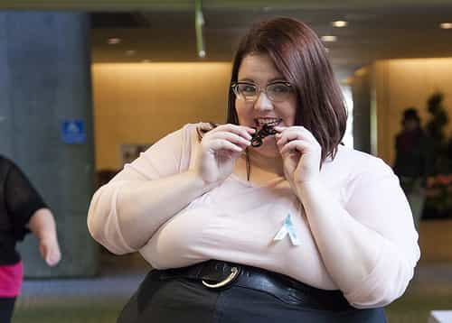
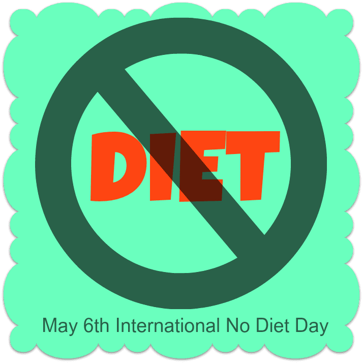

is an aspiring philosopher king, living the dream, travelling the world, hoarding FRNs and ignoring Americunts. He is a European at heart, lover of Latinas, and currently residing in the USA.


As I watched Roosh’s interview on Dr. Oz last year, I was thinking to myself, “Why all the uproar—being thin is healthy and sexually attractive. Who could be against that?” Well, it turns out, feminists. Having secured equal rights, equal pay, and the ability to vote, feminists no longer have anything legitimate to fight for. Indeed, women already are treated more favorably than men, with government social programs targeted directly to them, preference in divorce cases, and boosted employment status through affirmative action and quota based hiring.
So, instead of turning from fighting the oppression of women to another meaningful and important issue, feminists have jumped the shark and embrace ideas like censorship, fat shaming, and attacking men.
No to happiness, a boyfriend, or ever seeing your belly button
Last week, the University of Minnesota invited Virgie Tovar, a self-proclaimed “fat activist” (such a thing would have been impossible just one generation ago) to campus to celebrate.. wait for it.. International No Diet Day. If that isn’t crazy enough, consider that the College of Food and Agriculture, who presumably teaches food nutrition to its students, sponsored and endorsed the event. That’s right, an institution of higher learning with a school of food and nutrition is actually endorsing the idea that we should ignore what we eat, and just let the chips fall where they may (directly into Virgie Tovar’s mouth—she loves chips).
A public university is encouraging the idea that its people should be fat, unhealthy blobs, and shouldn’t strive for physical conditioning. If this is how higher education feels about your body, is it any wonder what they want to do with your mind?
Tovar has made profiting off the slovenliness of other women a viable career, and has written books with hundreds of pages telling them to “ignore what science, logic, and men tell you, and just pig out because feelings.” She also sells an annual retreat to Jamaica in November, which at the time of publishing was almost sold out with prices starting at $1,400.
Though you might have thought this holiday was created by Lindy West sometime in the early 2000s, it was actually created in 1992 by Mary Evans Young, a British woman who was bullied at school for being fat. She also wrote the book “Diet Breaking: Having It All Without Having To Diet,” she sums up her philosophy by asking the perverse question, “What do you think would happen if you spent as much time and energy on your careers as you do on diets?”
Under her twisted logic, if being bullied at school for being fat means we should all abandon dieting and healthy eating, then should every man who was ever called “fag” in the locker room turn gay? I think that is already part of their agenda. Male restaurant owners quickly capitalized on this joke of a holiday as a trick to sell extra desserts and plus sized meals at marked up prices, but one can only expect this holiday to gain more mainstream acceptance as time goes by.
Water levels must be lowered before they are allowed to enter the pool
Tovar and her followers proudly wear their fatkinis — “a two piece bathing suit for fat girls often involving high waisted bottoms.” Here are a few of Tovar’s reasons for wearing her Fatkini in public:
My fatkini is the swimwear equivalent of farting in the face of patriarchy. How lovely, a 30 year old woman acting like a child.
My fatkini is my claim to visibility and an open invitation to admire me, flirt with me, and worship me (do please make sure to ask first!). OK, I’ll humor you: But you clearly don’t understand what “open invitation” means.
My fatkini disproves one of the diet industry’s biggest lies: I don’t need to lose 20 or 30 or 50 pounds to look good in a bathing suit. I look good right now. Correct, you need to lose about 100 to “look good.”
A question that would never be asked without social programming
One thing you will never notice fat accepting women talk about is men. They will not talk about their love life. You will not see pictures of them with men. Because they receive no attention or admiration from men. Men, outside of those with special kinks or fetishes, find fat women disgusting and unattractive. Fatness is even a bigger factor than age, which is one of the most appealing aspects of a woman. A thin, fit 30 year old with a toned body is always preferred over a 19-year-old in a fatkini.

U Minnesota is ranked as one of the top 10 schools in the nation for public health. And they have invited a fat activist who is opposed to the very existence of studying nutrition or analyzing food content to speak to their students. Why do people naturally shun fatness? It’s unhealthy, leading to shorter lifespans and more medical problems. It’s physically unappealing: I’ve seen small children—children too young to have been exposed to social norms of what is beautiful or not—react favorably to thin bodies and facial symmetry and react with disgust to obesity and odd facial features.
Hopefully this natural beauty from the past cancels out the earlier eyerape
Certainly beauty is unfair to some degree. I will never be as objectively beautiful as whatever movie star the ladies are currently fawning over. But I can develop a strong body, a strong mind, confidence, muscles, and charm, which is beautiful enough to attract lots of women. As we’ve seen before, women are capable of doing the same—maximizing their assets and remaining naturally attractive to men, but today’s culture would prefer that they just give up and turn into blobs.

Tovar tells a story of seeing a group of four women sharing a slice of cake for dessert in a restaurant where she overheard them talking about needing to exercise afterwards so as not to become fat. Tovar attacks this as an example of “fat-phobia.” The agenda Tovar is pushing is more extreme than anything seen before. We’re not talking about the idea of “it’s ok to splurge once in a while and eat something tasty to reward yourself” being an acceptable message. No, society is openly pushing for degeneracy—choosing pizza and ice cream over healthy food. Shunning diet choices completely and eating whatever, whenever, and however much that you want to. Rejecting exercise. Society is openly pushing for negative, harmful behaviors.
In the past, libertarians complained about the government being used as a tool to enforce moral behavior. But at least the behavior they were pushing was generally good. Don’t do drugs. Stay in school. Exercise. Be Healthy. Be a good neighbor. We have now jumped the shark and are openly advocating destructive and sickening behaviors.
Without a sharp change, hopefully spearheaded by Trump, expect to see more degeneracy and sickness not just tolerated, but actually promoted in the future.
 If you like this article and are concerned about the future of the Western world, check out Roosh's book Free Speech Isn't Free. It gives an inside look to how the globalist establishment is attempting to marginalize masculine men with a leftist agenda that promotes censorship, feminism, and sterility. It also shares key knowledge and tools that you can use to defend yourself against social justice attacks. Click here to learn more about the book. Your support will help maintain our operation.
If you like this article and are concerned about the future of the Western world, check out Roosh's book Free Speech Isn't Free. It gives an inside look to how the globalist establishment is attempting to marginalize masculine men with a leftist agenda that promotes censorship, feminism, and sterility. It also shares key knowledge and tools that you can use to defend yourself against social justice attacks. Click here to learn more about the book. Your support will help maintain our operation.
Read More: Fat Shaming Week